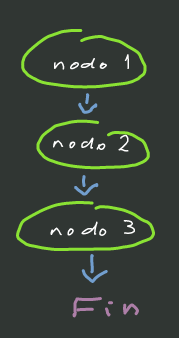

Ciclo de de vida de un proceso¶
Cada proceso está conformado por nodos acomodados en orden cronológico que definien los pasos necesarios para su realización.
Estos nodos pueden representar la participación de una persona o un sistema en la historia del proceso.
El proceso inicia con una petición [POST] /v1/execution la cual creará los siguientes objetos:
Un apuntador en redis hacia el primer nodo del proceso
Un objeto execution en redis que representa la instancia actual del proceso
Un registro en mongodb de la información recolectada en este primer nodo
Un registro en mongodb para esta instancia (ejecución) del proceso.
El primer nodo de un proceso es especial pues no presenta el ciclo de vida completo de un nodo tradicional enmedio o al final del proceso, pues para el primero nodo la información se recolecta inmediatamente en la petición que lo inicia.
Ciclo de vida de un nodo¶
Para los nodos en los que interviene un humano o sistema externo el ciclo de vida consiste en ser «despertados» por el manejador, lo cual dispara el mecanismo de notificación del(los) actor(es) responsable(s) del nodo. En ese momento el nodo queda en pausa hasta que la información es provista por medio de una petición [POST] /v1/pointer, la cual marcará el nodo como completado y continuará con el proceso.

Nodo es despertado por el manejador
El manejador encuentra a los actores responsables del nodo y los notifica
El nodo es notificado de que existe información provista por alguno de los actores responsables
El manejador busca y despierta al siguiente nodo
Cada instancia de un proceso tiene siempre alguna cantidad variable de apuntadores vivos que apuntan a cierto nodo del proceso que está pendiente. En general hay exactamente uno pero hay espacio para la futura implementación de tareas paralelas, con lo cual habría varios.
Nodos síncronos¶
También existen nodos síncronos que realizan tareas muy sencillas que no requieren un proceso de notificación, como puede ser el nodo condicional IF. En estos casos el manejador emite una señal que será recibida por él mismo unos milisegundos más tarde y que le indicará que debe continuar con el procesamiento del nodo.

Fin de un proceso¶
La conclusión de un proceso está marcada por el último nodo de un proceso. Cuando el manejador trate de buscar el nodo siguiente y no encuentre uno determinará que se trata del fin del proceso y realizará algunas tareas de mantenimiento, como son:
Eliminar todos los apuntadores de redos
Eliminar el objeto
executionde redisRegistrar la fecha de conclusión del proceso en mongodb